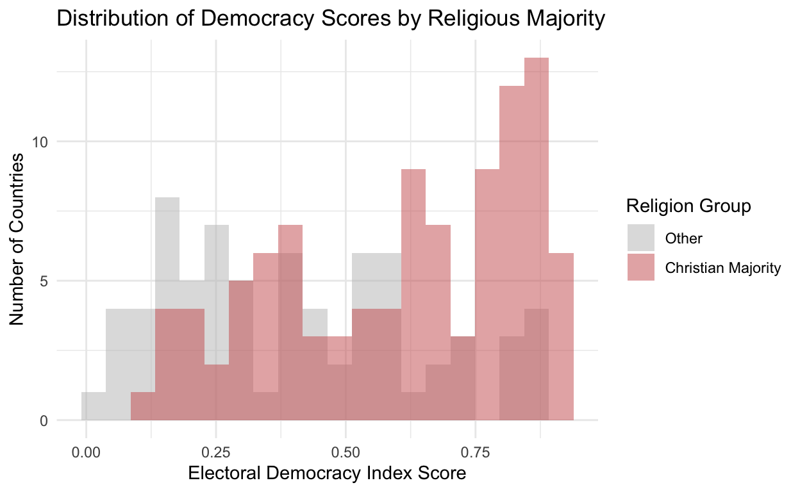
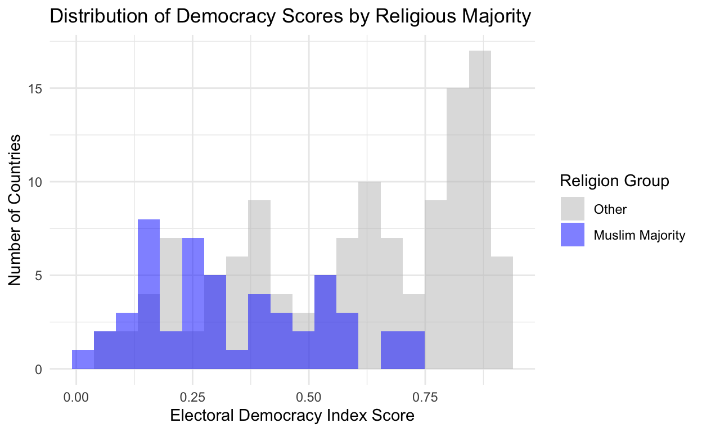
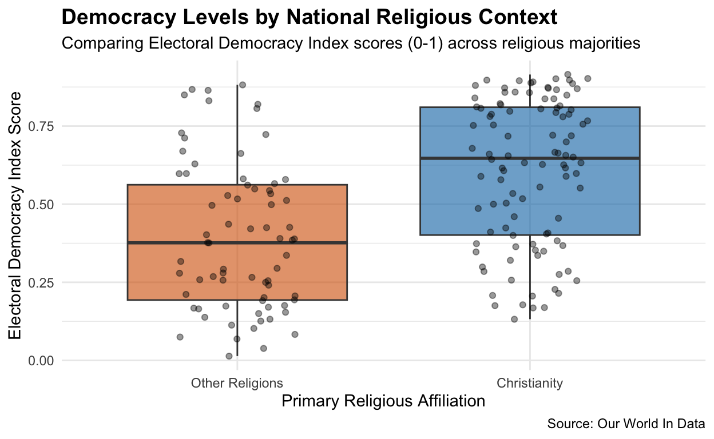
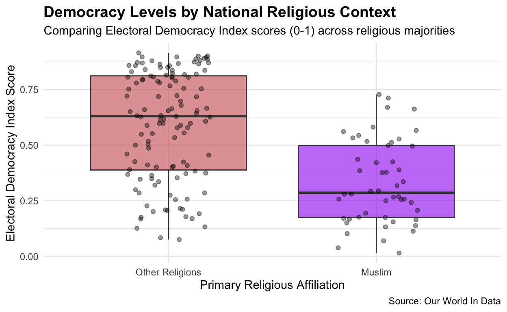

A look into whether religion impacts a countries democratic government structure using a regression analysis
We often hear on the news from a plethora of different sources that the West is under decline because of the integration of other religions into countries where Christianity has been the dominate religion practiced by the population. While thinking through topics I was scrolling online and found online debates arguing in favor and against these different doctrines and it inspired me to take a look to see if countries with different religious affiliations have more or less democratic structures than those who are more Christian. This is highly important as many countries in recent years have had more far-right leadership with emphasis on religion in their governments and these differences will surely have impacts on the geopolitical state of the world. Studying this topic can provide better more evidence based discussion on religion and it’s place in government and allow us to have more honest conversations.
Research Question: Does a country’s religious affiliation indicate how democratic the country is?
Hypothesis: I hypothesize that regardless of a country’s religious affiliation the differences of democratic score will show a statistical insignificance change as I believe that religion would not lead to huge disparities in level of democracy. I think this because I think other factors play more signifgant roles in whether a country will be more democratic or not and I think a change in relgious doctrine wouldn’t promote less democratic values that are too diffent from each other. Essentially I think the null hypotheisis is going to be proven right, which I will describe more what I mean by that in the next section.
I got my data from Our World In Data which is a non-profit decicated to uploading current research on many of the world’s issues so research and the general public have access to data so we can all help each other develop good solutions through shared research. I use two sets of data that measure electoral democracy and most common religion in countries.
My outcome variable in this project is Electoral Democracy Index. This variable was expert coded as experts measured countries on a bunch of different factors to measure their democratic values. Based on that system each country in the data set is given a number in between 0 to 1 with 0 being lowest level of democracy and 1 being highest level of democracy. I use this variable to get a measure of countries democratic levels.
My predictor variable is religious affiliation. This data was found generally by researchers using country provided census data and surveys to help track what each country identifies generally in terms of religion. In this project we converted the categorical variables of the different religions to a binary variable where a 1 means the country is predominatly a particular religion and 0 means they are not. The purpose of this was to make the linear regression modeling easier. All missing data in both data set were automatically set to 0.
The criteria for supporting or rejecting the null hypothesis will be having a p-value less than 0.05 (having a 95% confidence interval). I choose this measure as I think relying a industry standard provides a level of strength to the data that can be reliably used in academic discourse. If the p-value is below 0.05 for any of our religious predictors it shows that there is unlikely chance that the relationship occured by chance. If it’s greater than it shows that there isn’t a statistically significant meaning, so the null hypothesis which in this case is, religion has no affect on democracy scores cannot be rejected.
Another important factor is the direction of the relationship. If there is a positive relationship (meaning the coefficient for any of the religious variable is positive) than that indicates that the potential relgion with the positive coefficient does have higher democracy scores. A negative coefficient will indicate lower democracy scores.




So we have two box plots showcasing Democracy levels of Christian and Muslim countries. In the Christian majority plot the median line for Christian countries sits above the median line for non-Christian countries. This helps us visualize what we would explain later as the coefficent of .21 we care about in the next section. In the inverse the Muslim-majority median line is lower than the non-Muslim median line, essetionally the opposite pattern (representing the -.16). These plots do a good job of showcasing the spread of countires aswell and showcassing why the medians lines are where they are at. We are not saying there aren’t Muslim countries that are democrat but rather this data set shows that majority of the countries are in the IQR range that makes the box in graph two lower than graph one.
| Variable | Estimate | Std. Error | t-statistic | p-value |
|---|---|---|---|---|
| Constant (Baseline) | 0.39 | 0.03 | 14.26 | 0 |
| Christian-Majority Country | 0.21 | 0.04 | 5.88 | 0 |
| Variable | Estimate | Std. Error | t-statistic | p-value |
|---|---|---|---|---|
| Constant (Baseline) | 0.59 | 0.02 | 28.94 | 0 |
| Muslim-Majority Country | -0.26 | 0.04 | -6.79 | 0 |
I ran two regressions (one with Christian majority countries and one with Muslim majority countries). The coefficient in the Christian majority model was 0.21 showing that on the Electoral Democracy Index Christian majority countries were 0.21 higher compared to the baseline of non-Christian countries on the index. In the same breathe Muslim countries were -0.26 indicating they were 0.26 lower than their non-Muslim country counterparts on the index. While this is very intriguing and I think shows a corelation of I don’t think these coefficents show a casualty just given the amount of confounding variables that could also be at play, but I do think the coefficients being complete opposites does showcase something interesting to look at (more about confounders spoken on in the conclusion section).
I think that there is a substantive relationship between our coefficients as we see a clear positive pattern for our Christian countries and a clear negative pattern for our Muslim countries. This to me shows that at least in comparison these two major religions have some sort of correlation to their impact on democracy. I don’t think we should intrepret these results though causally given for the Christian majority regression the r squared value was around .16 and for the Muslim majority regression around .21 meaning our models can only explain 16% and 21% of our variation respectively. Given the r squared it just shows how other confounders are at play for this research question.
To recap, the two regressions that we ran showed that there is a statiscally significant reltationship between a country’s religion and their level of democracy while comparing among other religions as Christian majority nations were .21 points higher on average and Muslim majority nations were .26 lower than average. With the p-value found in this regression we found that it’s unlikely these results were caused by random chance. The results show that at least in comparsion of religion my hypothesis was wrong but, proved right that there are still more confounders that cause these differences in democracy as showcased by the r squared values of these regressions.
I think some of the limitations to this analysis would be the lack of other factors in the regression. While we looked at how different religions compare to each other, we fail to mention other factors that can contribute to a country’s decision to be more democratic like economy or frequency of war. I think adding more variables to the regression will only help us be able to find out if religion is truly a factor by helping remove confounders. I also think that in a different variation of the project I could’ve done multiple years of data versus just only using 2020. This allows me to see changes over time and can help provide a stronger argument of causality not just correlation.